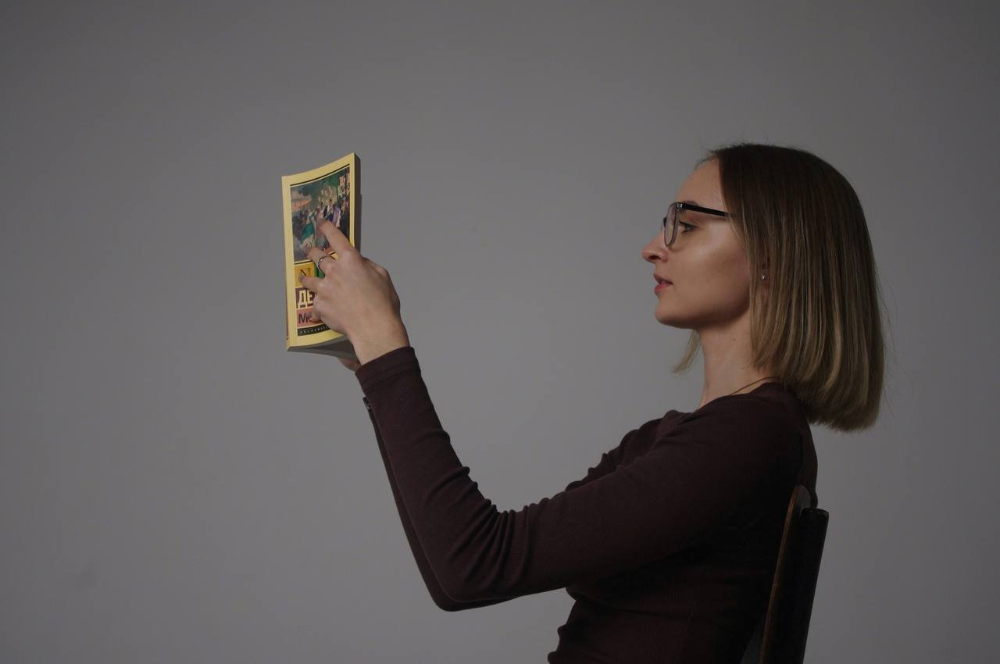
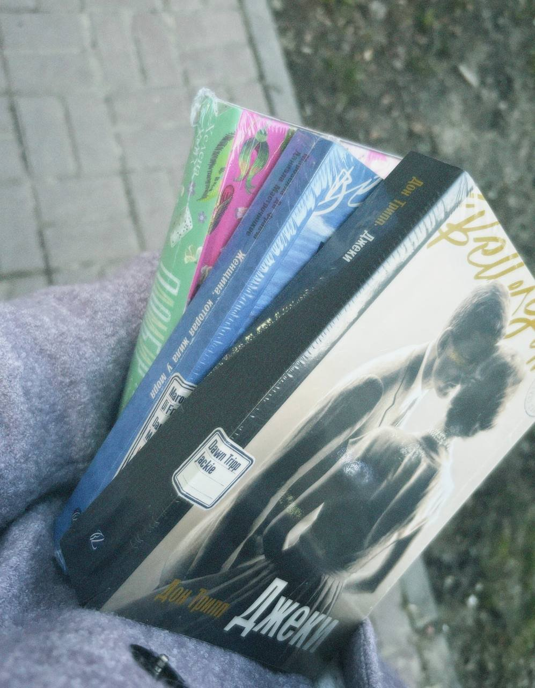

Добро пожаловать в мой книжный мир!

Привет! Меня зовут Алиса, и я очень люблю читать книги. Для меня чтение — это возможность путешествовать по удивительным мирам, знакомиться с интересными героями и проживать сотни разных историй.
Я создала этот блог, чтобы делиться впечатлениями о прочитанном, рассказывать о любимых произведениях и находить людей, которые так же сильно любят книги.
Надеюсь, здесь ты найдёшь вдохновение для следующего литературного путешествия!
Что ты найдёшь в моём блоге?

- Отзывы на прочитанные книги
- Мои любимые произведения и авторы
- Книжные рекомендации
- Личные впечатления и заметки
Здесь всегда найдётся место разговору о хороших историях.
Немного книжного настроения

Люблю моменты, когда выбираешь новую книгу и ещё не знаешь, какая история ждёт внутри.
С чего начать?
Загляни на мою книжную полку, чтобы посмотреть прочитанные книги и оценки. А в разделе «Мои отзывы» я делюсь впечатлениями.
Полезный книжный ресурс
Искать другие отзывы читателей можно на LiveLib.
Настройки книжного уголка
Выбери настроение страницы или посмотри сегодняшнюю дату. А точное время всегда видно в названии вкладки.